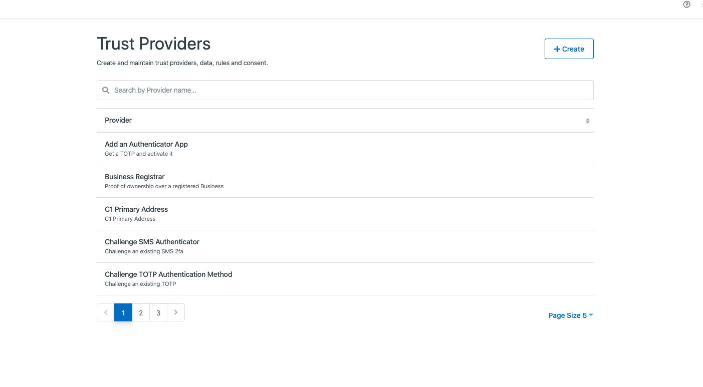
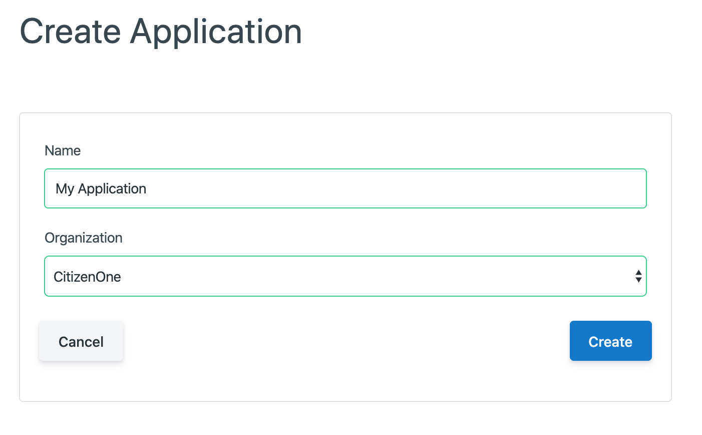
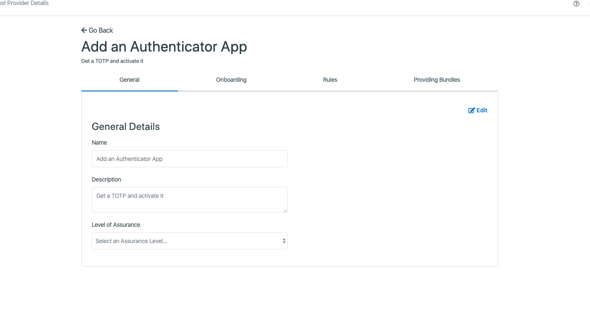
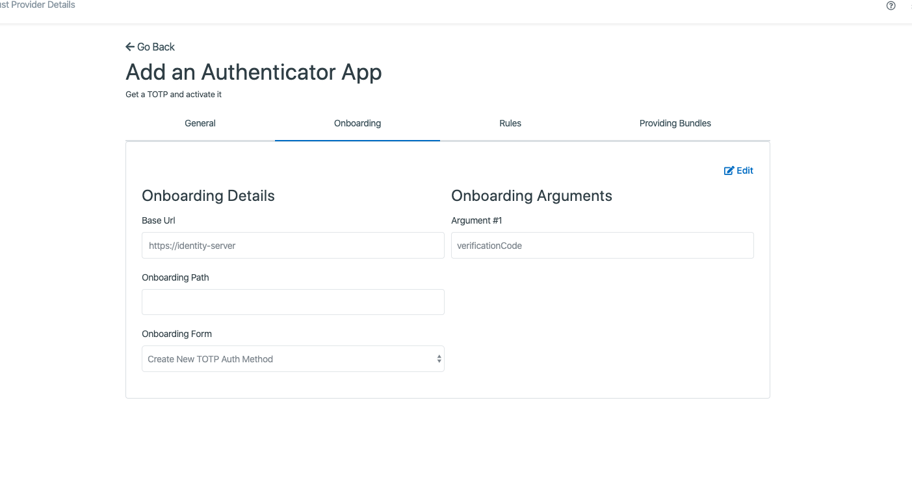
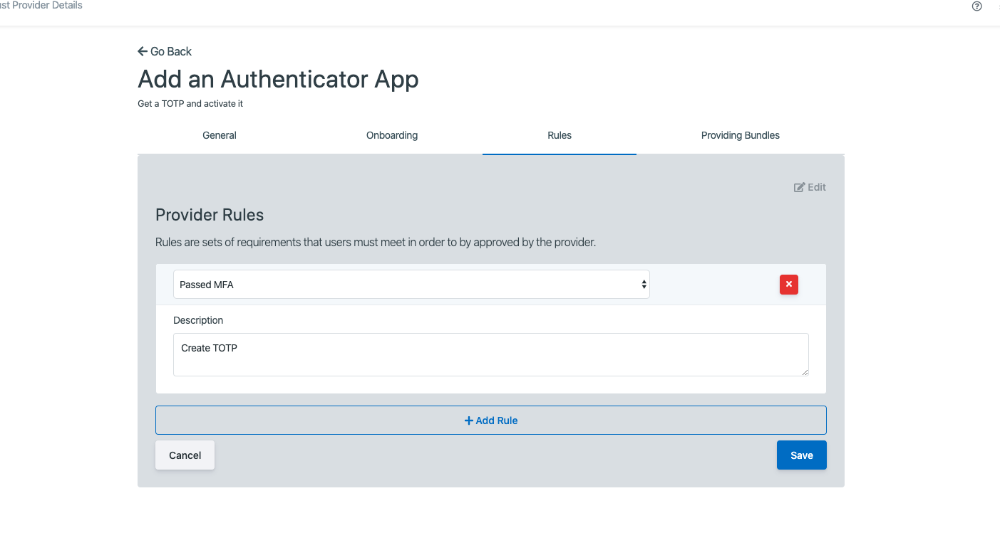
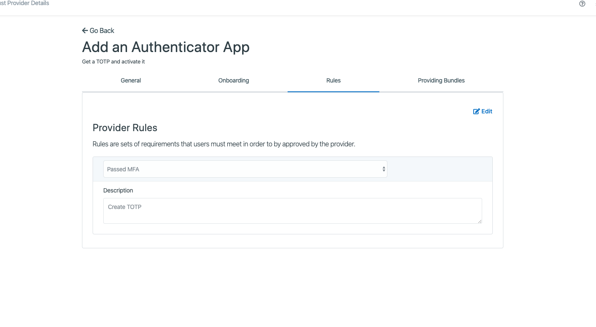

Trust Provider Management¶
A trust provider faciltiates providing onboarding rules and data intergrations for policies.
{kind=link}
Creating Trust Providers¶
A trust provider can be created in Management by going to Tenants -> Trust Providers -> Clicking the [Create] button
{kind=link}
The general fields for a Trust Provider are:
Name: The name of the trust provider
Description: The optional description of the trust provider
Level of Assurance: The level of assurance (https://en.wikipedia.org/wiki/Identity_assurance)

Editing Trust Providers¶
Editing Trust Providers can be done in Management under: Tenants -> Trust Providers -> Clicking the Trust Provider
Note: You must click [Edit] in order to edit a Trust Provider in each tab.
General - This tab is used for general information of Trust Providers
{kind=link}
The general fields for a Trust Provider are:
Name: The name of the trust provider
Description: The optional description of the trust provider
Level of Assurance: The level of assurance (https://en.wikipedia.org/wiki/Identity_assurance)
{kind=link}
Onboarding - This tab is used for onboarding details of Trust Providers
{kind=link}
The onboarding fields for a Trust Provider are:
Base Url: The url for onboarding
Onboarding Path: The path for the onboarding url
Onboarding Form: The NoCode form for onboarding
Arguments (e.g., Argument 1, Argument 2) - Arguments to send to the onboarding form
Note: To add more arguments you can click the [Add Argument] button below the last argument.
{kind=link}
Rules - This tab is used for creating rules of Trust Providers
Rules are sets of requirements that users must meet in order to by approved by the provider.
{kind=link}
Providing Bundles - This tab is used for creating data bundles for pushing updates to clients
If you would like to publish to changes about your users, such as when their address or email changes, add those here.
The data bundle fields for a Trust Provider are:
Data Bundle Type: The type of updates to push to clients
Notify Url: The url (must be https) to push data bundles to.
{kind=link}
Notes:
Clicking the [Eye] icon will give you the schema of the data bundle
The notifiy url must be of type HTTPS.
Clicking the [Edit] will add a [Add Data Bundle] button. This button can be used to add new Data Bundles.
Currently you can only add one bundle for a particular type.
{kind=link}
{kind=link}